Microservices lieben Azure Container Apps
Go App Engine Cold Start
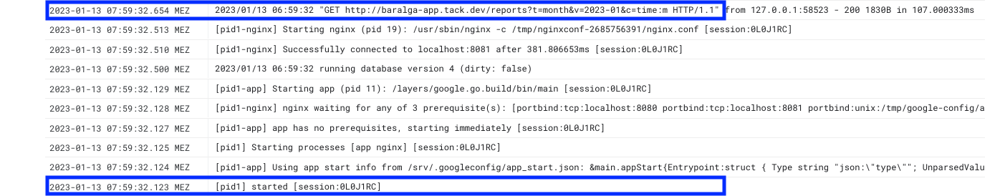
Up and running in 500ms! 🚀
Serverless Booster
- 🏃 Schnell
- ☯️ Einfach
- 🚂 Zuverlässig
5 Fakten zu Go
- statisches Typsystem
- Garbage Collection
- keine Vererbung
- Concurrency eingebaut
- native Ausführung
Linux, Win, z/OS, 386, amd64, ARM, WebAssembly, ...

Serverless Computing
Serverless Computing
- Dynamische Skalierung (0 bis x)
- Pay per Use
- Ereignis getrieben (HTTP, Message, Storage, ...)
- Ausführung auf verwalteter Infrastruktur
- Cloud Anbieter übernimmt Logs, Metriken, ...
Serverless Tarifrechner DogOp
Function-as-a-Service
- Google Cloud Run Function
- Azure Function App
Serverless Containers
- Google Cloud Run
- Azure Container Apps
Quote
Google Cloud Run Function
Quote Cloud Run Function
- API die Hunde OP Versicherung berechnet
- Bereitstellung als Google Cloud Run Function
Quote API für Rechner
Request
POST /quote
Content-Type: application/json
{
"age": 8,
"breed": "chow"
}
Response
HTTP/1.1 200 OK
Content-Type: application/json
{
"age": 8,
"breed": "chow",
"tariffs": [
{
"name": "Dog OP _ Basic",
"rate": 12.4
}
]
}
Quote Function aufsetzen
// Go Modul initialisieren
go mod init crossnative.com/dogop-serverless
// Google Cloud Functions Framework einbinden
go get github.com/GoogleCloudPlatform/functions-framework-go
go.mod // Modul Deskriptor mit Dependencies
go.sum // Checksummen der Dependencies
Quote Function aufsetzen
package function
import (
"net/http"
"github.com/GoogleCloudPlatform/functions-framework-go/functions"
)
// Package Init Function
func init() {
functions.HTTP("HandleQuote", func(w http.ResponseWriter, req *http.Request) {
w.Write([]byte("Hello Quote!"))
})
}
Quote Function erstellen
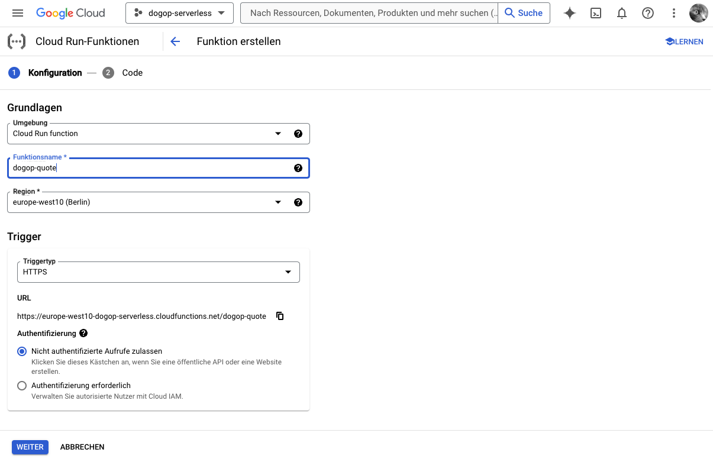Quote Function erstellen
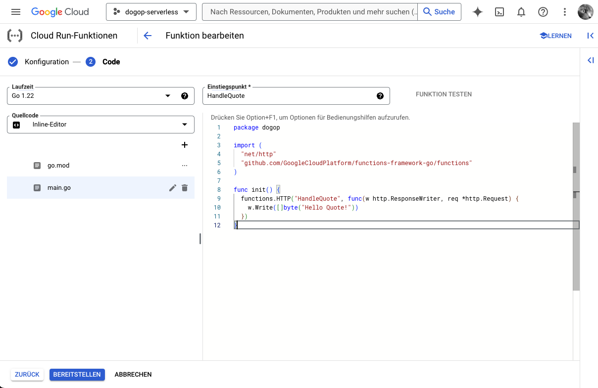Quote Function testen
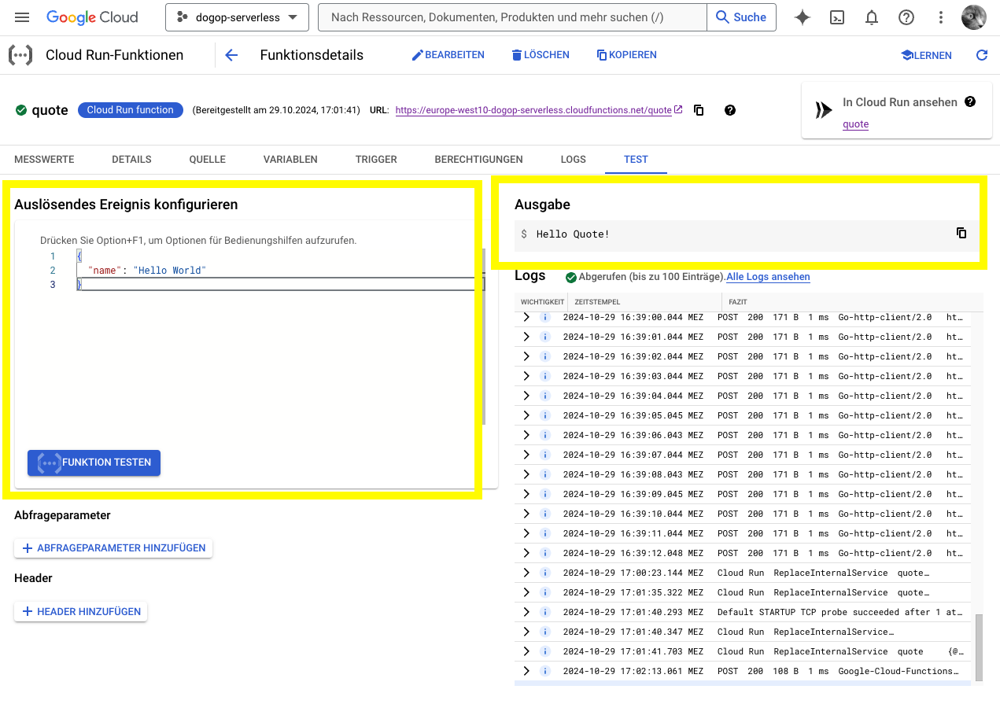Quote mit Rechner
func HandleQuote(w http.ResponseWriter, r *http.Request) {
// 1. JSON Request lesen
var quote Quote
json.NewDecoder(r.Body).Decode(&q)
// 2. Tarif berechnen
tariff := Tariff{Name: "Dog OP _ Basic", Rate: 12.4}
quote.Tariffs = []Tariff{tariff}
// 3. JSON Response schreiben
json.NewEncoder(w).Encode(quote)
}
func init() {
functions.HTTP("HandleQuote", HandleQuote)
}
Achtung, noch ohne Fehlerhandling! 💣
Struct statt Klasse
type Tariff struct {
Name string `json:"name"`
Rate float64 `json:"rate"`
}
type Quote struct {
Age int `json:"age"`
Breed string `json:"breed"`
Tariffs []Tariff `json:"tariffs"`
}
// Struct erzeugen
tariff := Tariff{Name: "Dog OP _ Basic", Rate: 12.4}
Quote Function deployen
- Deployment als Zip-Datei
- Cloud Build baut Docker Container
function.zip
|- function.go
|- go.mod
Quote Function testen
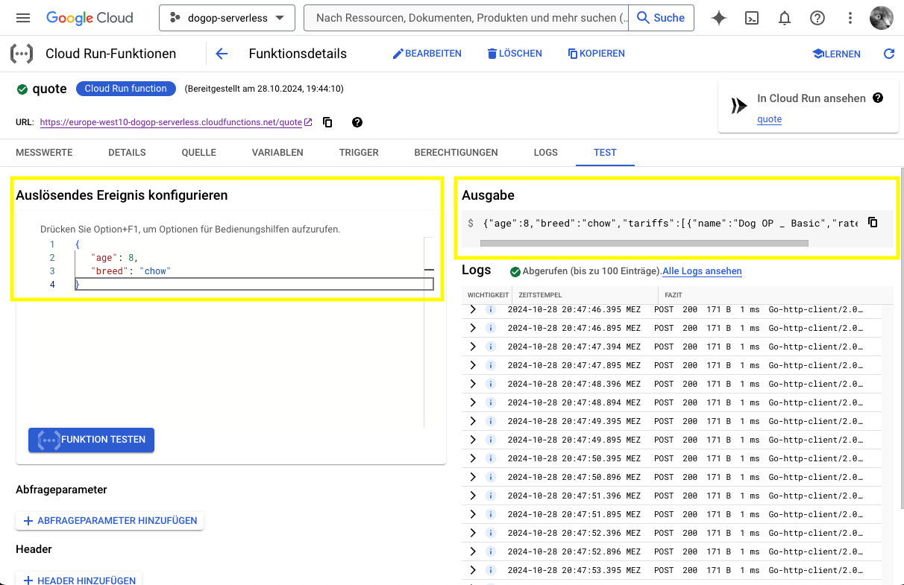Quote Cloud Run Function
Zahlen, Daten, Fakten
- Function Container Image 14,5 MB
- Container Startup in 50-60 ms
- Hauptspeicher 25 MB
- Antwortzeit Quote 15 ms
Fehler 💣
func HandleQuote(w http.ResponseWriter, r *http.Request) {
// 1. JSON Request lesen
var q Quote
json.NewDecoder(r.Body).Decode(&q) // 💣 Fehler möglich!
// 2. Tarif berechnen
tariff := Tariff{Name: "Dog OP _ Basic", Rate: 12.4}
quote.Tariffs = []Tariff{tariff}
// 3. JSON Response schreiben
json.NewEncoder(w).Encode(quote) // 💣 Fehler möglich!
}
Fehler 💣
- Go kennt kein spezielles Konstrukt zur Fehlerbehandlung
- Fehler sind normale Rückgabewerte
Fehler 💣
func HandleQuote(w http.ResponseWriter, r *http.Request) {
// 1. JSON Request lesen
var q Quote
// Potentieller Fehler 💣
err := json.NewDecoder(r.Body).Decode(&q)
// Auf Fehler prüfen
if err != nil {
// Fehler behandeln
http.Error(w, "Could not decode quote.😔", http.StatusBadRequest)
return
}
// ...
}
HTTP Handler testen
- HTTP Handler mit Standardlib testbar
- Unit Tests in Standardlib enthalten
- Google Cloud Functions sind HTTP Handler
- Tests in Datei
main_test.go
HTTP Handler testen
HTTP Handler testen
go test -v ./...
=== RUN TestHandleQuote
--- PASS: TestHandleQuote (0.00s)
PASS
ok crossnative.com/dogop-serverless 0.228s
HTTP Handler testen
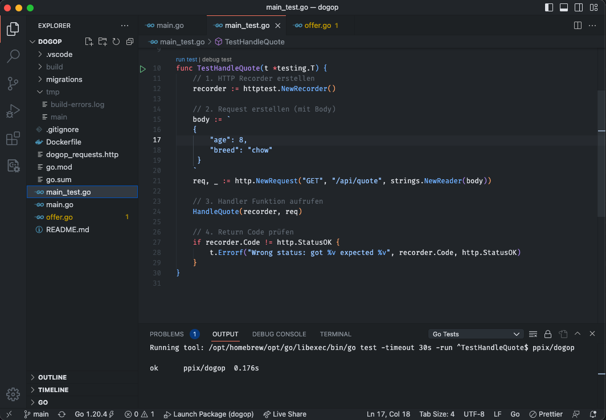Quote
Azure Function App
Quote Azure Function aufsetzen
package main
import (
"net/http"
"os"
)
func main() {
// 1. Port initialisieren
listenAddr := ":8080" // Default Port
customHandlerPort, ok := os.LookupEnv("FUNCTIONS_CUSTOMHANDLER_PORT")
if ok {
listenAddr = ":" + customHandlerPort
}
// 2. Quote Handler registrieren
http.HandleFunc("/api/quote", HandleQuote)
// 3. Web Server starten
http.ListenAndServe(listenAddr, nil)
}
Quote Azure Function aufsetzen
host.json
{
"version": "2.0",
"logging": {
"applicationInsights": {
"samplingSettings": {
"isEnabled": true,
"excludedTypes": "Request"
}
}
},
"extensionBundle": {
"id": "Microsoft.Azure.Functions.ExtensionBundle",
"version": "[4.*, 5.0.0)"
},
"customHandler": {
"description": {
"defaultExecutablePath": "function",
"workingDirectory": "",
"arguments": []
},
"enableForwardingHttpRequest": true
}
}
quote/function.json
{
"bindings": [
{
"authLevel": "anonymous",
"type": "httpTrigger",
"direction": "in",
"name": "req",
"methods": [
"get",
"post"
]
},
{
"type": "http",
"direction": "out",
"name": "res"
}
]
}
Quote Azure Function deployen
- Deployment als Zip-Datei
- Function Binary als Linux Executable
GOOS=linux GOARCH=amd64 go build main.go
function.zip
|- function
|- quote/function.json
|- host.json
Quote Function erstellen
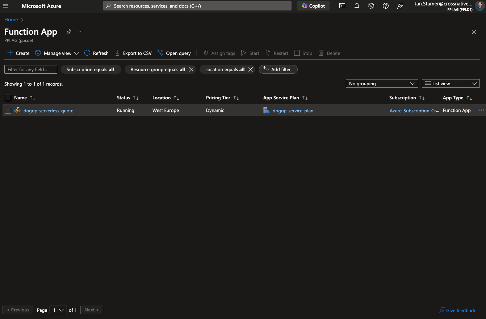Quote Function erstellen

Quote Function erstellen
Benötigte Azure Resourcen:
Quote Azure Function App
Zahlen, Daten, Fakten
- Antwortzeit Quote 30 ms
- Binary function Größe 9 MB
- Keine extra Dependencies, nur Standardlib 😍
Quote
Google Cloud Run
Go Standardlib WebServer nutzen
package main
import (
"net/http"
"os"
)
func main() {
// 1. Port initialisieren
listenAddr := ":8080" // Default Port
customHandlerPort, ok := os.LookupEnv("PORT")
if ok {
listenAddr = ":" + customHandlerPort
}
// 2. Http Router erstellen
router := http.NewServeMux()
// a) Quote Handler registrieren
router.HandleFunc("POST /api/quote", HandleQuote)
// b) Hello Handler registrieren
router.HandleFunc("GET /", func(w http.ResponseWriter, r *http.Request) {
w.Write([]byte("Hello DogOp!"))
})
// 3. Web Server starten
log.Printf("Listening on %v", listenAddr)
http.ListenAndServe(listenAddr, router)
}
Dockerfile für DogOP
# 1. DogOp Builder
FROM golang as builder
WORKDIR /app
ADD . /app
RUN CGO_ENABLED=0 go build -ldflags="-w -s" -o build/dogop .
# 2. DogOp Container
FROM gcr.io/distroless/static
COPY --from=builder /app/build/dogop /usr/bin/
EXPOSE 8080
ENTRYPOINT ["/usr/bin/dogop"]
🚢 Google Distroless Image 8,5 MB
Docker DogOP mit
// 1. Docker Image bauen
>_ pack build dogop-cnb
--buildpack paketo-buildpacks/go
--builder paketobuildpacks/builder-jammy-tiny
// 2. Docker Image ausühren
>_ docker run dogop-cnb
🚢 Docker Image Buildpack 40 MB
Cloud Run erstellen
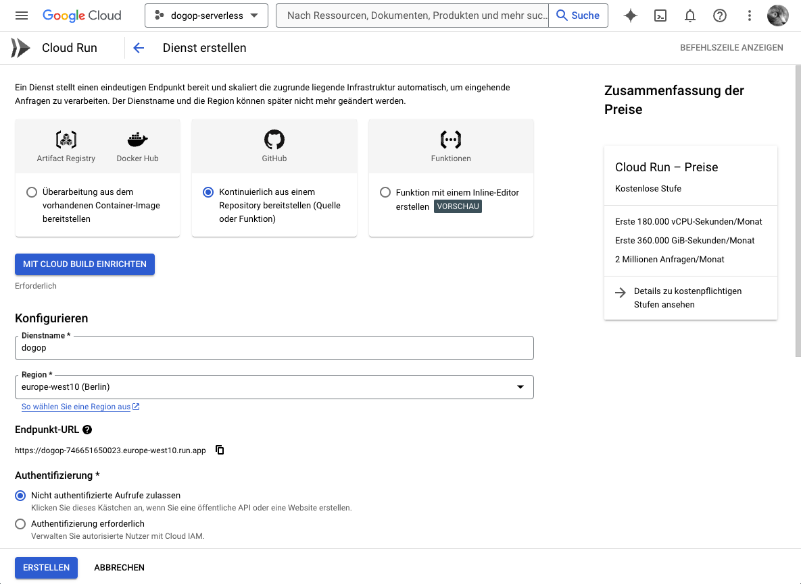Quote Cloud Function
Zahlen, Daten, Fakten
- Container Startup in 40-80 ms
- Hauptspeicher 25 MB
- Antwortzeit Quote 17 ms
Quote
Azure Container App
Azure Container App
- Kubernetes ohne Server
- KEDA Autoscaling, Replicas und Ingress von Kubernetes
- Ein Container App Environment für mehrere Apps
Container App erstellen
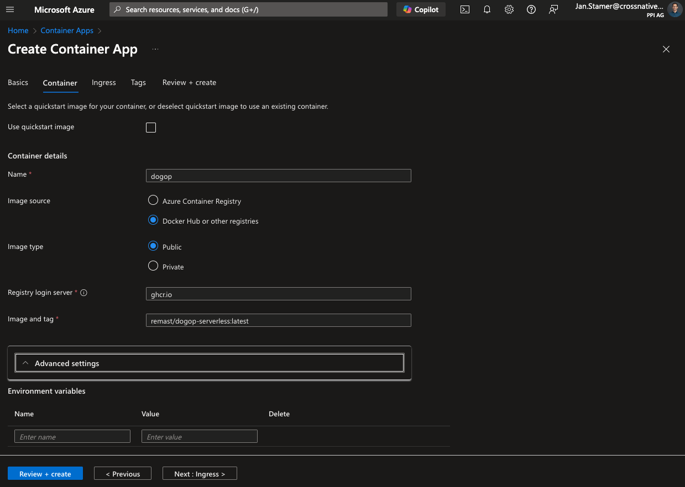Container App erstellen
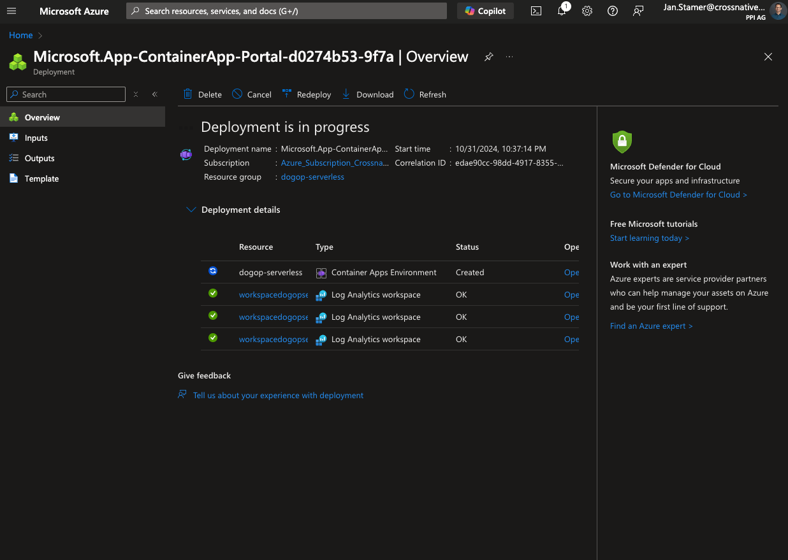Container App erstellen
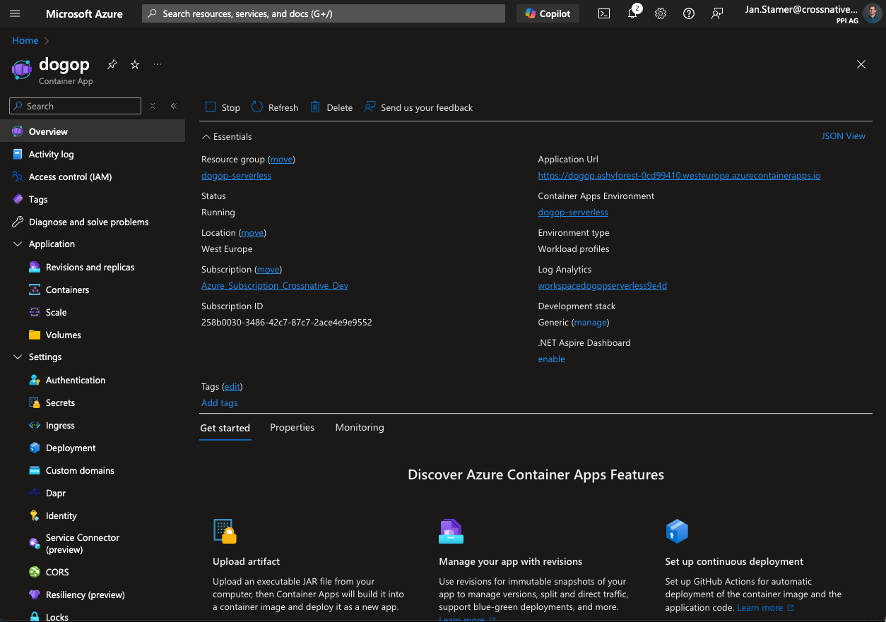Azure Container App
Zahlen, Daten, Fakten
- Container Cold Startup in 600 ms 😮💨
- Antwortzeit Quote 13 ms
Health Check
- Nutzung von
health-go(hellofresh) - Fertige des Checks für Postgres, HTTP, Redis, ...
Health Check
// Register Health Check
h, _ := health.New(
health.WithComponent(health.Component{
Name: "dogop",
Version: "v0.0.1",
}),
health.WithChecks(
health.Config{
Name: "check",
Timeout: time.Second * 2,
SkipOnErr: false,
Check: func(ctx context.Context) error {
// check implementation goes here
return nil
},
},
),
)
// Register Handler Function
router.HandleFunc("GET /health", h.HandlerFunc)
Serverless Tarifrechner DogOp
Function-as-a-Service
-
Google Cloud Run Function
- Go Function Framework
- HTTP Handler Function
- JSON und Structs
- Fehler
- HTTP Handler Test
-
Azure Function App
- Umgebungsvariablen
- HTTP Router/Server
- Lokale Ausführung
Serverless Containers
-
Google Cloud Run
- Docker Image
- HTTP Router/Server
-
Azure Container Apps
- Health Check
Serverless Booster
- 🏃 Schnell
- ☯️ Einfach
- 🚂 Zuverlässig
3 Gründe für Go
- Einfach
- Mächtig
- Langweilig